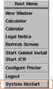

- 00000018WIA305CDF20GYZ
- id_131065213.6
- Apr 8, 2025 6:22:03 AM
Replacing the host computer - Dell T5810
Prerequisites
| Personnel requirements | |||
|---|---|---|---|
| Required persons | Preliminary requirements | Procedure | Finalization |
| 1 | - | 60 minutes | 120 minutes |
| Tools and test equipment | |||
|---|---|---|---|
| Item | Quantity | Part number | Manufacturer |
| Nonmagnetic Titanium Service Tool Kit | 1 | 5113258 | - |
| Disk Management Tool | 1 | - | - |
| ESD Strap | 1 | - | - |
| Consumables | |||
|---|---|---|---|
| Item | Quantity | Part number | Manufacturer |
| GE equipment maintenance sticker | 1 | Refer to FRU manual | - |
| Replacement parts | |||
|---|---|---|---|
| Item | Quantity | Part number | Manufacturer |
| Dell T5810 computer | 1 | Refer to FRU manual | - |
| Dust filter (if needed) | 1 | Refer to FRU manual | - |
| Safety | ||||
|---|---|---|---|---|
|
Before working in any GE HealthCare MR suite or doing any GE HealthCare service procedure, you must:
If you have any safety concerns at any time, do not begin work or immediately stop work and move to a safe location. Immediately contact your supervisor or site safety officer for instructions on how to proceed. | ||||
| ||||
About this task
Prepare Workstation for Host Computer Removal
Procedure
- Make sure the customer has archived all images to an external storage device such as a PACS or DVDs.
- Perform Save Info.
- (For FRU which will be returned as Good Item Only) Setup Bios for “AC Recovery” to “Power Off” (Default for FRU).
- Right-click on the Linux desktop to access the Root Menu and then select “System Restart”.
Figure 1. System Restart 
- Press [F2] on Keyboard before entering the OS. The BIOS setting GUI will show up. Perform the followings for BIOS setting.
- Use Mouse to select .
- Click Apply button on GUI and Exit button to exit.
- When system is rebooted and login menu is shown, select in welcome login screen to shutdown the system.
Figure 2. Shutdown 
- Right-click on the Linux desktop to access the Root Menu and then select “System Restart”.
- Perform LOTO on the GOC/operator workspace. See Applying LOTO - Global Operator Cabinet (GOC) and Operator Workspace.
Remove Host Computer from GOC
Procedure
- Remove the two screws that secure the left side panel of the
GOC.Note The side panel has a short ground lead connecting it to the main chassis. When removing the side panel, do not strain this ground lead.
Figure 3. Remove GOC Left Side Cover 
- Disconnect the short ground lead that connects the side panel
to the GOC main chassis at the center of the lead.
Figure 4. Left Side Panel Ground Lead 
- Remove all the cables connected to the host computer.
Confirm that the cables are properly labeled. Note their locations for reattachment.
Figure 5. Dell T5810 Cable Configuration  Note
Note- For older GOCs which include an 8-port hub, route and connect Ethernet cable from GOC hub to this port.
- For newer GOCs without a hub, this port is available for connecting to a service laptop, site network, or AW option. If connection to multiple Ethernet devices is required, a customer-supplied switch must be used.
Transfer USB Expansion Panel from Old PC to New PC
Procedure
- Lift up the cover release latch, tilt the cover about 45-degree angle, and remove it from the old host PC.
Figure 6. PC Cover Removal 
- Connect the other end of USB cable to CN26 of Computer Board.Note Make sure the direction of connector is as shown in illustration below.
Figure 11. Connect to CN26 
Install New Host Computer
Procedure
- Remove the dust filter and Velcro strips from the old computer, and install them on the new computer. If the old filter or Velcro strips are not reusable, install a new set.
Figure 12. Dust Filter 
1 Velcro strips 2 Dust filter